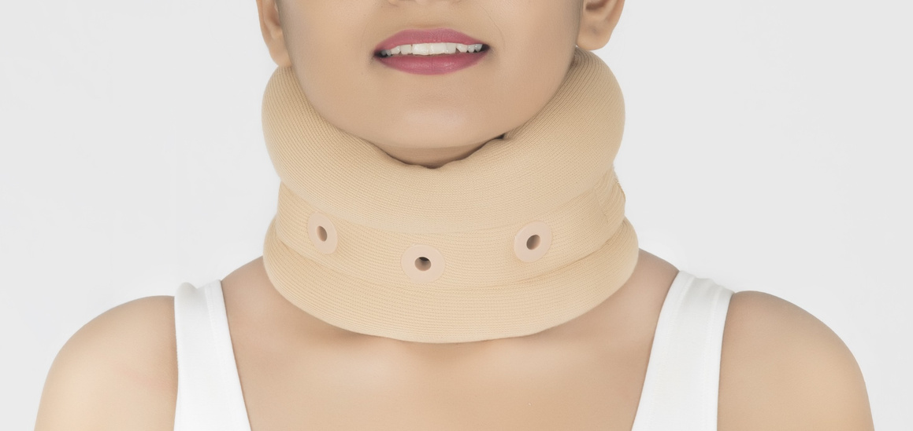
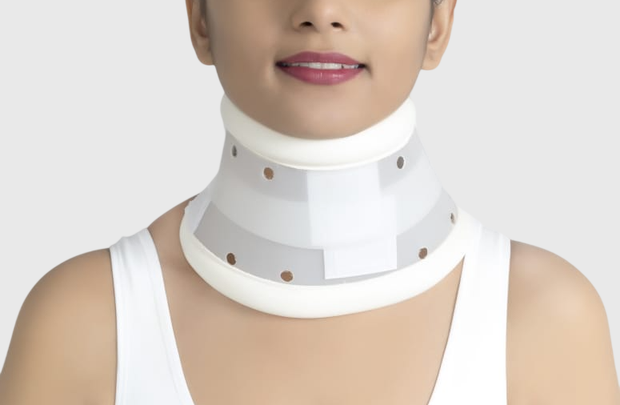

Preview only — image fixed at top, "Enquire" fixed at bottom, middle content scrolls.

Available sizes: S, M, L, XL
Buy the best cervical collar for neck pain relief. Soft, dermophilic neck support brace designed for cervical spondylosis, posture correction, and recovery.
The Cervical Collar Neck Support Brace is a high-quality cervical collar brace designed to provide effective neck support and controlled immobilization for pain relief and recovery.
Made with high-density soft foam and high GSM dermophilic stockinette fabric, this neck support belt ensures superior comfort, breathability, and skin-friendliness—even during extended wear. It helps maintain proper cervical alignment while reducing pressure on neck muscles.
Its ergonomic and lightweight design makes it ideal for daily use at home, office, or during travel. Trusted by healthcare professionals, this cervical collar supports posture correction, reduces strain, and promotes faster recovery.
Q. Can I wear a cervical collar all day?
Yes, it can be worn for extended hours, but it is best to follow your doctor's recommendation for duration.
Q. Is this cervical collar useful for cervical spondylosis?
Yes, this cervical collar brace provides support and helps reduce pain and stiffness associated with cervical spondylosis.
Q. What is dermophilic fabric and why is it important?
Dermophilic fabric is skin-friendly and breathable, helping prevent irritation and discomfort during long hours of use.
Q. How do I choose the right size?
Measure your neck circumference and select from S, M, L, or XL for the best fit.

Available sizes: S, M, L, XL
Buy the best hard cervical collar for neck pain relief and rigid support. Designed for cervical injuries, spondylosis, and post-surgical immobilization.
The Hard Cervical Collar Neck Support Brace is designed to provide rigid immobilization and maximum cervical support for individuals recovering from neck injuries, cervical spondylosis, or post-surgical procedures.
Constructed using a two-part ventilated polyethylene structure, this cervical collar ensures superior strength, durability, and consistent support. It effectively limits neck movement, helping reduce strain on the cervical spine and promoting faster recovery.
The collar features padded borders with vinyl leather covering, enhancing comfort while preventing skin irritation during prolonged use. Its ergonomic design ensures proper neck alignment, making it suitable for both clinical and home use.
Trusted by healthcare professionals, this rigid cervical collar is ideal for conditions requiring strict immobilization and support.
Q. What is a hard cervical collar used for?
A hard cervical collar is used to provide rigid neck support and limit movement during injury recovery or post-surgery.
Q. Is this collar suitable for severe neck pain?
Yes, it is ideal for moderate to severe conditions requiring strong immobilization.
Q. Can I wear this collar all day?
It can be worn for extended periods, but usage duration should follow medical advice.
Q. Is the collar comfortable for long use?
Yes, padded edges with vinyl leather covering help reduce discomfort and skin irritation.